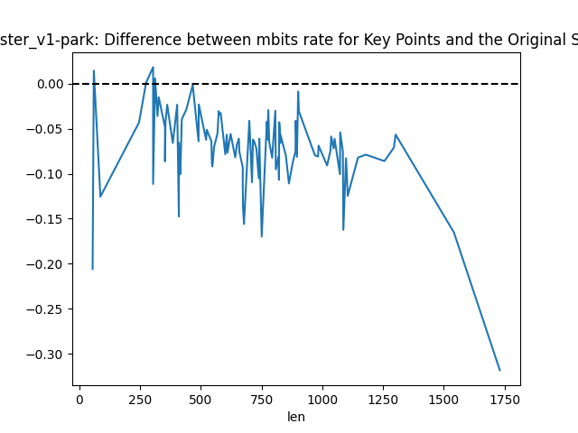
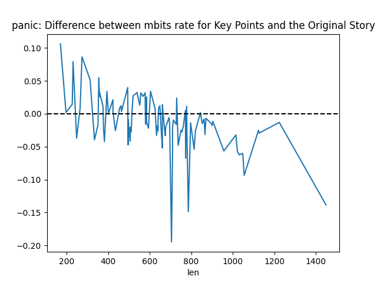
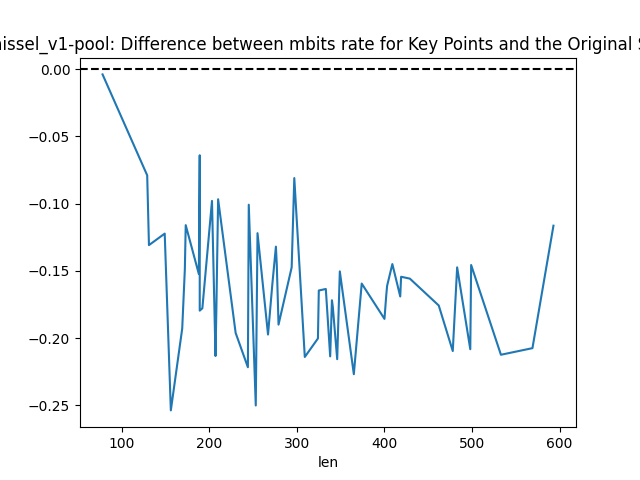
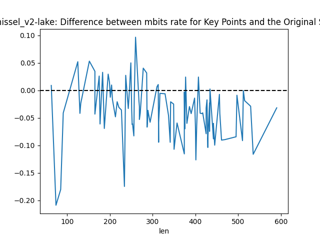
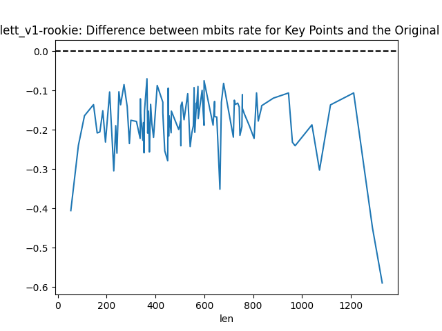
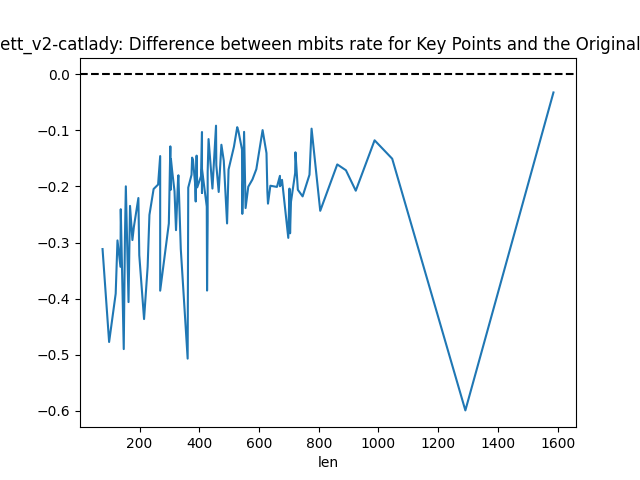

Difference between Mbits rate for key points and real narrative
Bear

- Meeting friends in college and their shared background as athletes
- The friends' enjoyment of hunting and the narrator's reluctance
- The group's decision to go bear hunting in Canada and the narrator's apprehension
- The journey to the remote cabin in Canada and the group's reluctance to actually hunt
- The decision to draw cards to determine who would hunt a bear and the narrator's unlucky draw
- The narrator's encounter with a bear and the humorous resolution
- The aftermath of the bear hunting trip and the friends' reaction
Boy Scout

- The boy scouts' 50-yard dash at the pier
- The narrator catching cramps and calling for help
- The disbelief of the narrator's peers and the scoutmaster's inaction
- The rescue by a stranger who had just arrived
Costa

- The death of the narrator's daughter, Marie, after an appendectomy
- The complications following the surgery and the hospital's decision to move Marie
- The narrator's preparation for Marie's discharge from the hospital
- The tragic turn of events at the hospital leading to Marie's death
- The impact of Marie's death on the family and the narrator's refusal to allow an autopsy
Do Something

- The narrator's encounter with a reckless driver
- The driver's erratic behavior and the narrator's concern
- The narrator's internal debate and decision to take action
- The narrator's interaction with the police and the driver's response
Hester v1 Park

- The narrator's life context and family situation
- The narrator's intuitive feeling and decision to pray
- The immediate sign of the father's improvement
- The father's recovery and regained mobility
- The long-term outcome for the father
Hester v2 Church

- The narrator's experience of hearing a voice suggesting a prayer for their grandpa
- The narrator's decision to visit the church and pray
- The narrator's sudden urge to return home and the discovery of their grandpa's recovery
- The grandpa's continued recovery and the impact on the family
- The narrator's reflection on the power of faith and prayer
- The grandpa's life after the incident and the narrator's lasting memories
- The narrator's continued belief in the presence and power of faith
Panic

- The narrator's usual workday and initial feelings of lightheadedness
- The onset of the narrator's chest tightness and pressure
- The narrator's worsening condition and inability to breathe
- The manager noticing the narrator's distress and coming to help
- The narrator collapsing and being caught by the manager
- The manager's assistance and the narrator's recovery from the panic attack
- The narrator's reflection on the incident and the importance of self-care
Schissel v1 Pool

- The incident at the wedding reception
- The reason behind the push
- The moment before the push
- The friend's reaction after the push
- The aftermath of falling into the pool
- The cousin's comment
Schissel v2 Lake

- The annual summer camping trip and peaceful afternoon
- The friend's dare to catch a frog and the narrator's initial refusal
- The playful push into the lake by the best friend
- The narrator's reaction and laughter after being pushed
- The narrator's promise of playful revenge
Stein

- The family's move to a new neighborhood
- The violent attack on the family's house
- The narrator's quick thinking to protect the siblings
- The narrator's search for their mother
- The encounter with the policeman and his response
- The mother's assertiveness and visit to the police station
- The captain's advice and the mother's refusal to move
- The mother's speech to the neighbors and the family's resolve to stay
- The change in the neighbors' behavior after the father's illness
Stein Final

Triplett v1 Rookie

- The Chief's reputation and his daughter's behavior
- The daughter's message about running away and the Chief's confrontation
- The search for the Chief's daughter and her unexpected location
- The advice from Deputy Frank Mitchell and the narrator's decision to transfer
Triplett v2 Cat Lady

- Mrs. Baker's reputation as the cat lady and her grandson's attempts to befriend the narrator
- The grandson's poor manners and the narrator's aversion to him
- The grandson's note about running away and Mrs. Baker's reaction
- The search for the grandson and the discovery that he hadn't run away
- The advice from Officer Dawson to the narrator to lay low